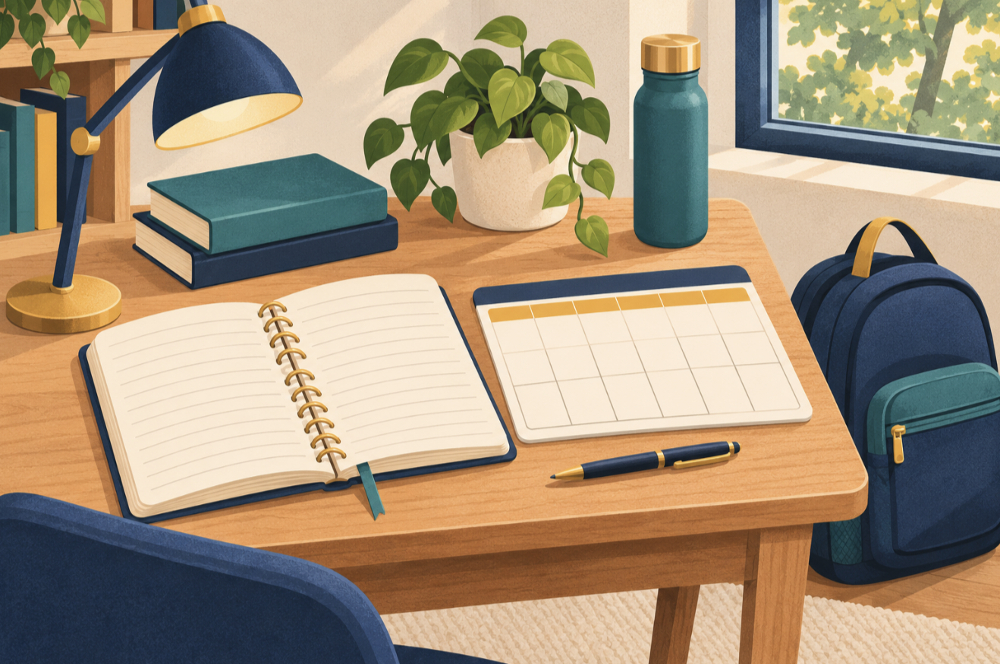

Start college one step at a time
Starting college can feel like being expected to know things nobody has explained yet. Student Starter Guide gives you a clear place to begin. Prepare before classes, use the first-week checklist, and return during the semester for study habits, budgeting tips, campus resources, and ways to meet people.
Before Classes Begin
You do not need to figure out the whole semester today. Start with these basics:
- Find your schedule. Save class times, building names, and room numbers where you can reach them quickly.
- Walk your route. Locate your classrooms before the first day and allow time between buildings.
- Check your accounts. Test your student email and learning platform, and read instructor messages.
- Review course materials. Check supply requirements before buying books or equipment.
- Plan your spending. List available money and expected costs for rent, food, transportation, and supplies.
- Pack the essentials. Bring your student ID, notebook, pen, water, and a charged device if needed.

Find the right next step
First Week
Follow a checklist for classes, deadlines, introductions, and asking for help.
Plan my first weekFirst Semester
Build study habits, track spending, find support, and make room for friendships.
Build my semester routine